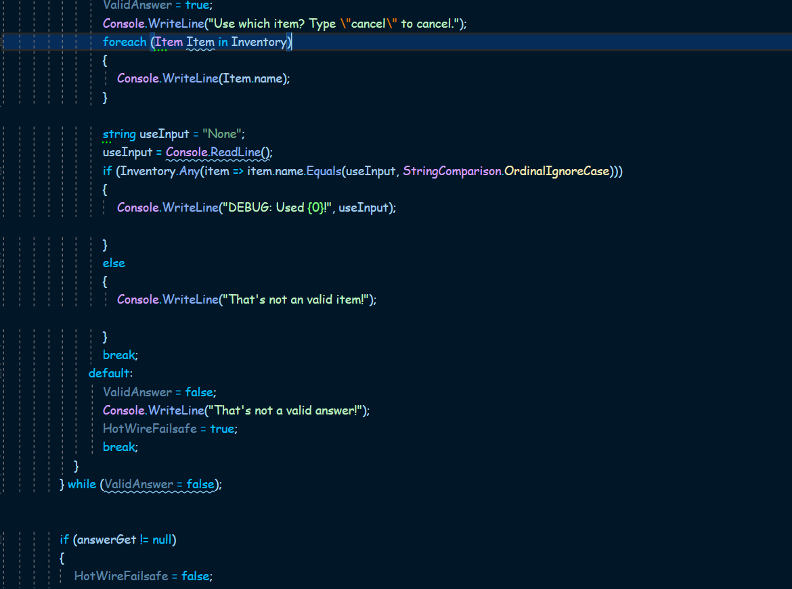
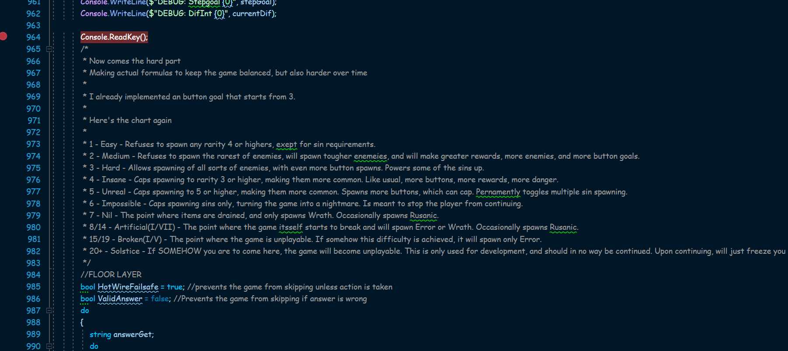
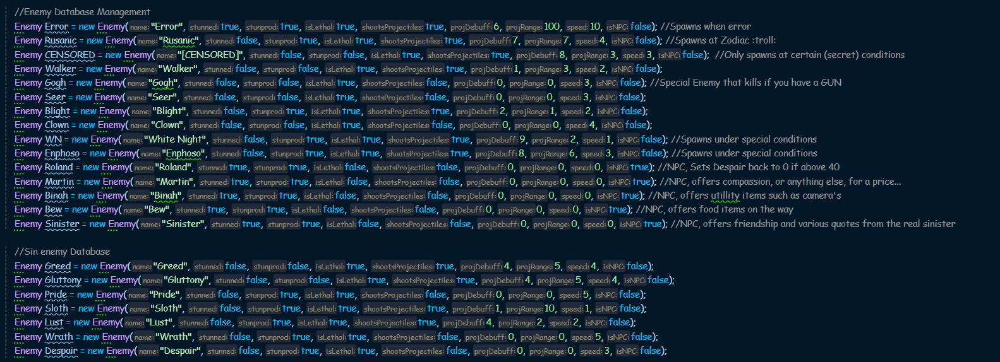
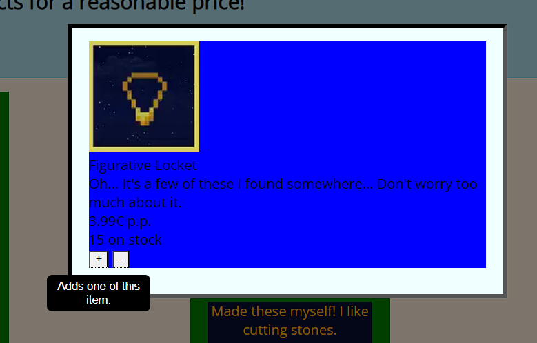
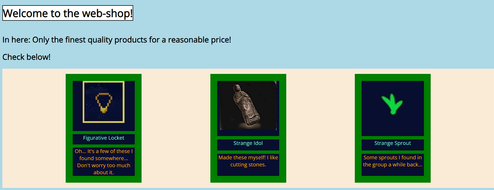
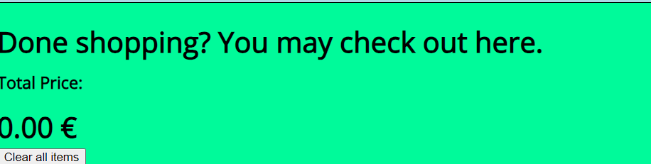
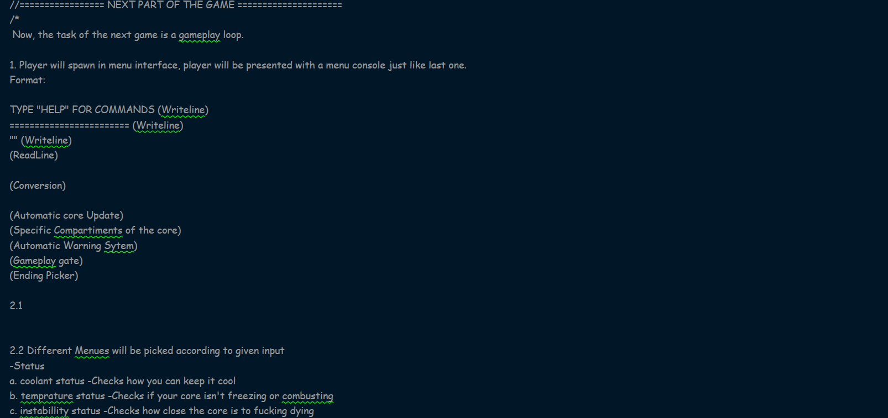

The project can be viewed by clicking on this sentence.
Minus One, or my text-based roguelike I'm completely developing since last year, has been my passion over the year,
and I'm still learning on how to implement mechanics in-game by the day. I plan on doing this project without any help, except for the internet.
It's getting fairly big, with alot of mechanics, floors, conditions and alot of fun while developing it. My biggest obstacles while making this is using the right things in C# to deal with problems.
Debugging isn't my strong suit, but it definetly helps me out. I'm certainly most proud to show this off, as it's been my own project, without anyone else interfering with it. This awakened my strong love for programming my own stuff.
Due to the lucridous size of the project, I've picked the features that I'm currently busy with hardest.
The first picture is a snippet of code while trying to use an item and the second one shows off difficulty scaling, thus building experience in my game design aswell. The last one, is my enemy database. I do not know how I pulled that one off. It was alot of writing.



The webshop can be viewed by clicking on this sentence.
My webshop assignment I made in the first period during my MBO education. While I was making this assignment, I did not pay as much attention to the design,
but rather to the functionality of the website. While not being the hardest assignment I've done, I still walked through alot of issues during startup and finalizing the project.
I took help from my fellow college students and my teacher in class.
I might have an issue with loading in the stylesheet. Might that have happened, you can consult the pictures below.




The webshop can be viewed by clicking on this sentence. The project is at the bottom of the program.cs file
Another passion project I've made since last year as a prank for my teacher at that time, Ricardo. We weren't that far into coding stuff yet, so I wrote something big that he'd hopefully find impressive.
I didn't find it hard to make this project. Alot of the things that were in it were already explained. It also used to be somewhat for my own goals, as I write stories that use the name mentioned in the script. This project was my kickstart for my own style of coding things.
The first image shows my plans for the main sequence of the game, while the second shows off a 'security' system.
